This article provides a tour of the Font tools available in the Firefox DevTools. This tool contains several useful features for viewing and manipulating fonts applied to any document loaded in the browser including inspection of all fonts applied to the page, and precise adjustment of variable font axis values.
Note: The updated Font tools as shown in this article are available in Firefox 63 onwards; if you are using an older version of Firefox the tools will not look or behave quite the same, but they will be similar (most notably the Font Editor will not be available).
The Fonts tab is located on the right-hand side of the Page Inspector when it is docked to the bottom of the screen. When it is docked to the right or left sides of the screen, the Fonts tab appears beneath the HTML pane. To access it:
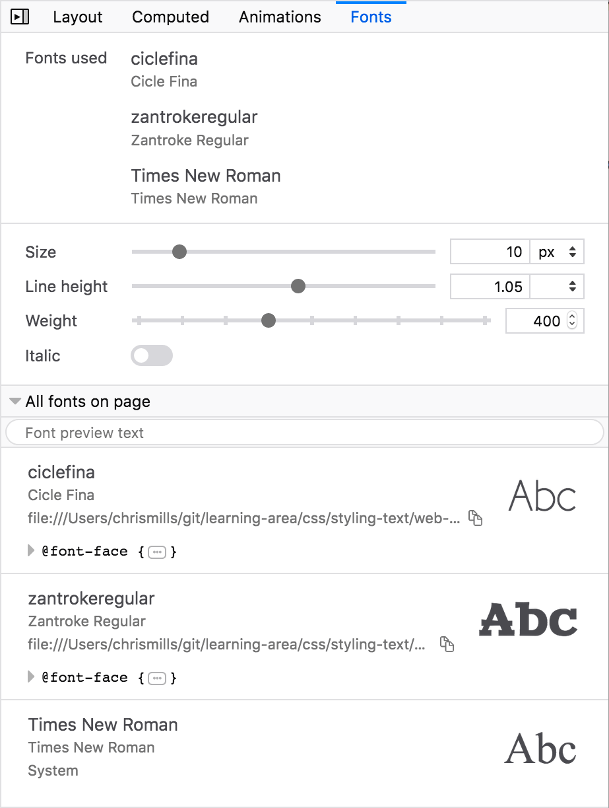
The Fonts tab has three major sections:
The top section of the Font Editor shows the fonts used by the currently inspected element, grouped by font family.
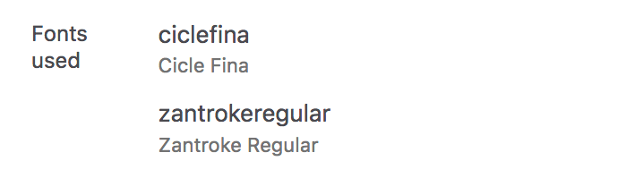
Fonts are considered "used" when there is text content in the inspected element that has the font applied to it. Empty elements will not have any fonts used and will display the message "No fonts were found for the current element."
Fonts will be included in this section for one of the following reasons:
font-family CSS declaration value.font-family CSS declaration has been applied.Firefox 63 adds the Font Editor — a new area below "Fonts used" with additional controls for editing the fonts’ characteristics.
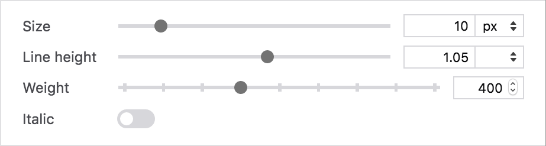
For standard (static) fonts, you will be able to change the settings listed below
The {{cssxref("font-size")}} for the inspected element.
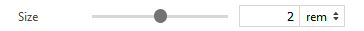
This can be set using em, rem, %, px, vh, or vw units. You can select values using the slider or enter a numeric value directly into the text box.
Note: If you want to use a different unit such as pt for font-size or line-height, you can set the property value applied to the currently inspected element to use that unit via the rules view, and the font editor will automatically pick it up and make it available in the associated units dropdown menu.
Changing the unit of measure converts the numerical value to its equivalent in the new unit, so the same computed value is maintained.
Example: If 1rem is equivalent to 10 pixels, when you change the unit of measurement from rem to px, 2rem becomes 20px.
The {{cssxref("line-height")}} of the inspected element.
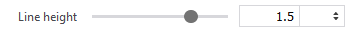
This can be set using unitless, em, %, or px units. You can select values using the slider or enter a numeric value directly into the text box.
Changing the unit of measure changes the value relative to the font-size setting.
Example: If the font is 20 pixels high and the line-height is 1.5em, when you change the unit of measure from em to px, the value will become 30px.
The {{cssxref("font-weight")}} for the inspected element.
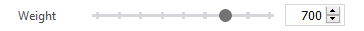
You can select values using the slider or enter a numeric value directly into the text box. For non-variable fonts the slider ranges from 100 to 900 in increments of 100.
Note: For variable fonts (see below) that define a wght variation axis, this range is custom.
The {{cssxref("font-style")}} for the inspected element.
This setting toggles between italic and normal values for the font-style CSS property.
Note: As you change settings, Firefox applies inline styles to the element to make the changes instantly visible on the page.
The remaining area, at the bottom of the Fonts tab, shows an expandable list of all of the fonts in use on the page.
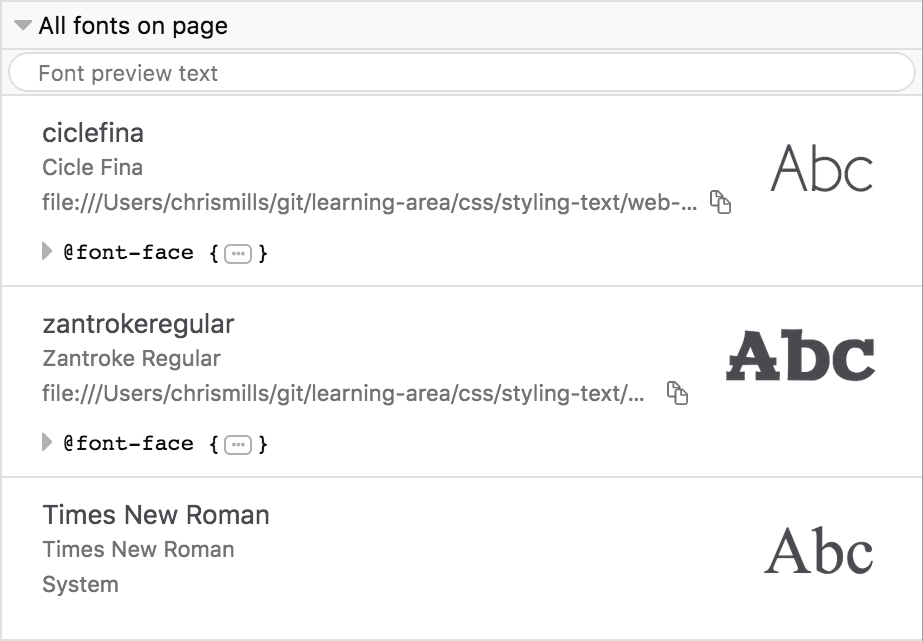
The list is useful because you can easily determine whether a font is a web font or a font hosted on your system.
Each font listed in this section shows you:
font-family identifier and full name of the font.Firefox 62 added support for variable fonts and Firefox 63 features support for editing the properties of variable fonts in the Font Editor.
Variable Fonts, or OpenType Font Variations, define a new font file format that allows the font designer to include multiple variations of a typeface inside a single font file. That means you no longer have to apply several different web fonts to a single page to represent a complete typeface for which a variable font is available, provided it includes the desired values for the different characteristics you want to vary.
Variable fonts make it easy to vary font characteristics in a much more granular fashion because their allowable ranges are defined by axes of variation (see Introducing the 'variation axis' for more information). For example, {{cssxref("font-weight")}} can be set to any value between 1 and 1000 in variable fonts (although it is not guaranteed that a variable font will support this entire range).
There are several registered axes. Although it isn't required that these axes be defined for every font, if the font designer does implement a registered axis, its behavior must follow the defined behavior.
All variable font axes have a four-character axis tag. The CSS {{cssxref("font-variation-settings")}} property uses the tag as part of the key-value pair. For example, to set {{cssxref("font-weight")}} using font-variation-settings, you could do something like this:
font-variation-settings: "wght" 350;
However, you should only use font-variation-settings as a last resort if there is no basic font property available for setting those characteristic values (e.g. custom axes).
Note: font characteristics set using font-variation-settings will always override those set using the corresponding basic font properties, e.g. font-weight, no matter where they appear in the cascade.
Here are the registered axes along with their corresponding CSS properties:
| Axis Tag | CSS Property |
|---|---|
| "wght" | {{cssxref("font-weight")}} |
| "wdth" | {{cssxref("font-stretch")}} |
| "slnt" (slant) | {{cssxref("font-style")}}: oblique + angle |
| "ital" | {{cssxref("font-style")}}: italic |
| "opsz" |
{{cssxref("font-optical-sizing")}} |
Any axis that is not on the list of registered axes is considered a custom axis. Custom axes do not have corresponding CSS font properties. Font designers can define whatever axis they want; each one needs to be given a unique four-character tag. The axis name and its range is up to the font designer.
Note: Registered axis tags are identified using lower-case tags, whereas custom axes should be given upper-case tags. Note that font designers aren't forced follow this practice in any way, and some won't. The important takeaway here is that axis tags are case-sensitive.
Warning: In order to use variable fonts, you need to make sure that your operating system is up to date. For example Linux OSes need the latest Linux Freetype version, and macOS prior to 10.13 does not support variable fonts. If your operating system is not up to date, you will not be able to use variable fonts in web pages or the Firefox Developer Tools.
If the inspected element uses a variable font, the Fonts tab shows the axes that have been implemented for that particular font, providing control to alter the value of each one. This is very useful for quickly finding out what axes are available in a particular font — they can vary quite dramatically as font designers can implement basically anything they like.
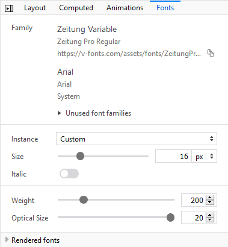
You can adjust the axes individually or, if the font designer has included defined instances, you can select one from the "Instance" drop-down list and view the updates live on your page.
Here are a couple of examples of fonts with different axes defined:
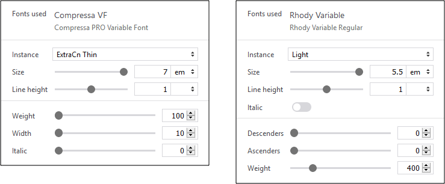
In the following example, you can see that the font "Cheee Variable" includes settings for Yeast and Gravity. These are custom axes defined by the font designer.
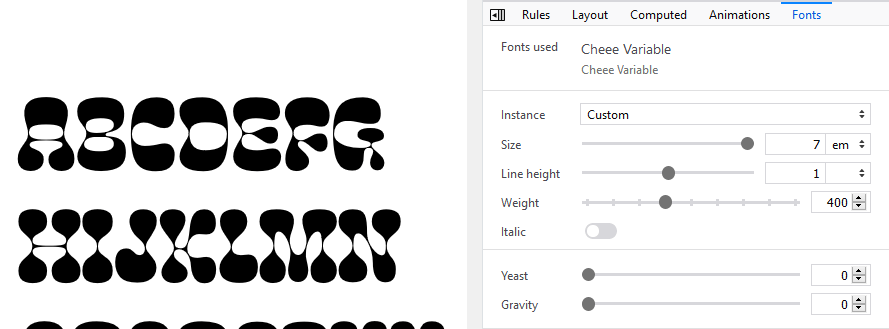
The first image shows the font as it is used on the page with default settings. The second image shows the same font after selecting the "Hi Yeast Hi Gravity" variation.
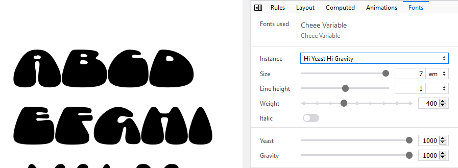
Finally, here are a few tips for making effective use of the Fonts tab:
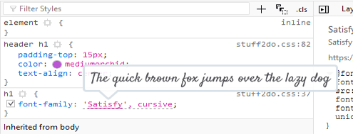
font-family font stack that is actually applied to the inspected element is underlined. This makes it easy to see exactly what is being applied where, when font stacks are specified.